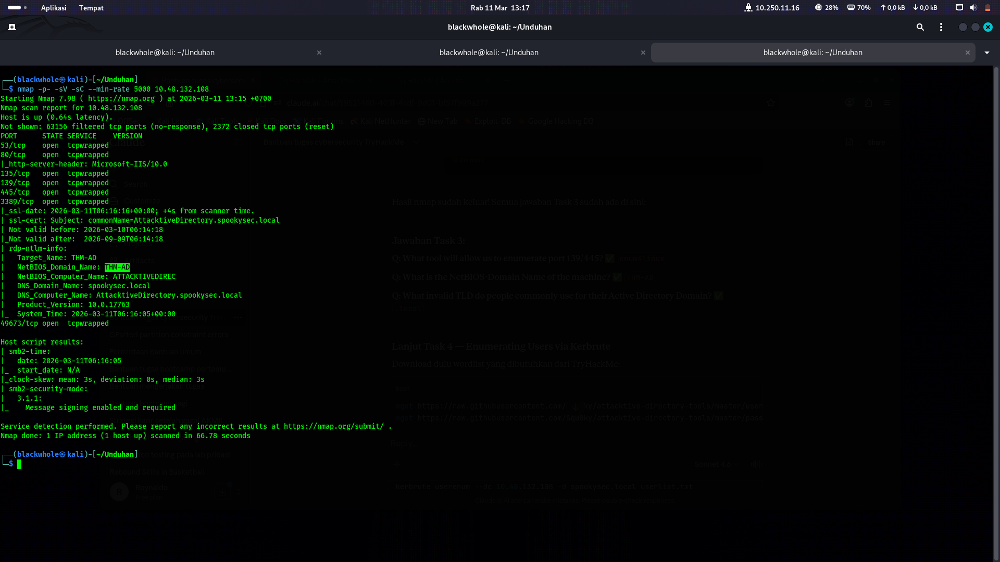

TASK 03
Enumeration
▼Nmap Scan
Mulai dengan full port scan untuk identifikasi semua service yang berjalan di target.
BASH
nmap -p- -sV -sC --min-rate 5000 10.48.186.111
terminal — nmap scan output

[ screenshot tidak ditemukan ]Dari output nmap ditemukan: NetBIOS-Domain Name: THM-AD, domain spookysec.local, dan Windows Server 2019.
| PERTANYAAN | JAWABAN |
|---|---|
| Tool untuk enumerate port 139/445 | enum4linux |
| NetBIOS-Domain Name | THM-AD |
| Invalid TLD yang umum dipakai | .local |